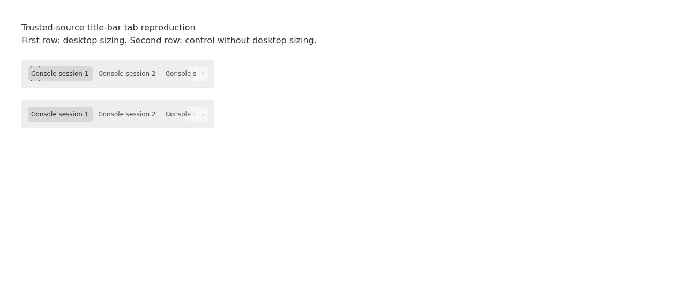
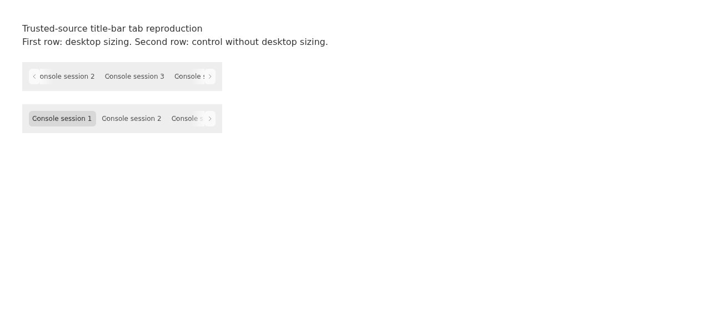
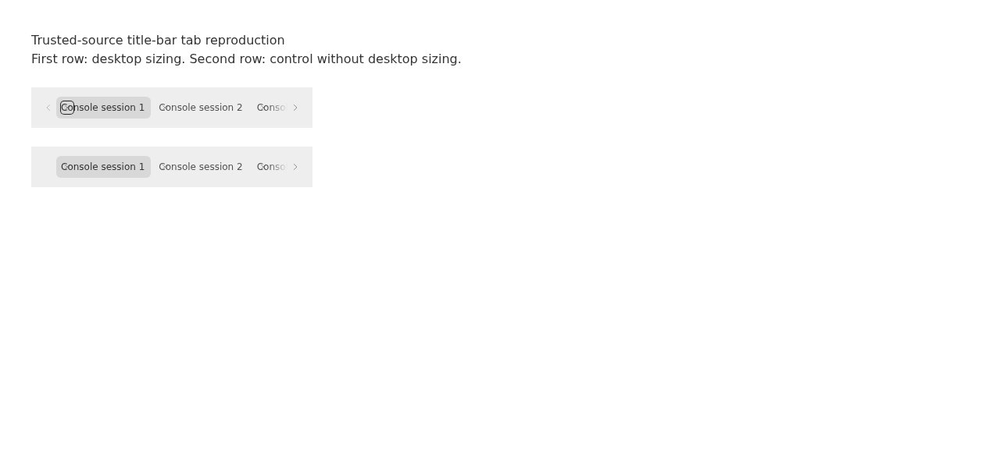

#7513 · Title-bar sizing leaks into tab affordances
Verdict: REPRODUCED · Root-cause confidence: high
1. TL;DR
The desktop title-bar height rule also resizes the small close buttons inside tabs. Separately, the overflow controls paint an opaque sidebar color over a frame that has an additional tint, and a newly visible scroll arrow consumes another 20 pixels of layout. Both clean source checkouts reproduce a 16×28 close control and a tab viewport moving from x=52 to x=72 while narrowing from 316 to 296 pixels. The differential control without desktop sizing remains 16×16. This is a faithful Chromium component reproduction, not a native macOS app smoke test.
2. Claims vs findings
| Claim | Status | Evidence |
|---|---|---|
| The close affordance becomes taller inside desktop chrome. | Verified | 16×28 in both base runs; identical component without the sizing ancestor is 16×16. |
| Overflow edges do not match the frame. | Verified | The frame combines sidebar color with a translucent recessed overlay; the arrow and fade paint only the unmodified sidebar color. Captured screenshot and computed gradients agree. |
| Showing the opposite arrow changes the viewport by 20px. | Verified | MutationObserver samples the first visible left arrow: width 0→20, viewport x 52→72 and width 316→296. |
| The symptoms occur in a packaged macOS build. | Unverified here | No macOS desktop or native WebKit runtime was available; this report verifies the shared source mechanism under Chromium. |
3. Environment
- Trusted main:
88cf8f644c81fca797ad80bc31bb36a61ce5cc9b, fetched and cross-checked against GitHub main. - Linux x86_64, Debian 12; Node v22.19.0; Chrome for Testing 157.0.8103.78; viewport capture 1280×577; fine-pointer browser.
- Normal frozen pnpm install. Initial whole-repository build hit an existing missing SDK types prerequisite; running the documented SDK types generation followed by the app Turbo build succeeded.
- First, second and fixed fixtures use ports 48751, 48752 and 48753 with separate temporary output directories. No server, daemon, provider, account or product data directory is used. The production instance was not accessed.
- Real SecondaryPanelTabStrip, TabPill, Button, OverflowFade and compiled production CSS; desktop sizing is imported from the real module. The frame class is obtained from the trusted sidebar source. Synthetic tabs only; no bridge stubs or dependency additions.
4. Minimal reproduction
- Save the four expanded source blocks below as
build.mjs,fixture.tsx,serve.mjsandmeasure.jsin a localreprodirectory beside the source checkout. Prepare and build trusted source, then bundle and serve the fixture. Port 48751 must be free.git clone https://github.com/get-bb/bb.git bb-7513 cd bb-7513 git checkout 88cf8f644c81fca797ad80bc31bb36a61ce5cc9b pnpm install --frozen-lockfile --prefer-offline pnpm exec turbo run build:types --filter=@get-bb/plugin-sdk pnpm exec turbo run build --filter=@bb/app SOURCE="$PWD" cd .. mkdir -p repro REPRO="$PWD/repro" node "$REPRO/build.mjs" "$SOURCE" /tmp/bb-7513-web node "$REPRO/serve.mjs" /tmp/bb-7513-web 48751
- Use a local headless Browser Automation session on the same host. Assign SESSION_ID to the returned id, then run the measurement. These are tool commands, not a requirement to run the product backend.
HOST_ID=$(bb status --json | node -e 'let text="";process.stdin.on("data",chunk=>text+=chunk).on("end",()=>console.log(JSON.parse(text).thread.environment.hostId))') bb browser-automation open --backend local --headless --machine "$HOST_ID" --json SESSION_ID=the_id_returned_by_open bb browser-automation run "$SESSION_ID" --script 'const page=await browser.getPage("main"); await page.goto("http://127.0.0.1:48751"); await page.snapshot()' --json bb browser-automation run "$SESSION_ID" --script-file "$REPRO/measure.js" --script-host "$HOST_ID" --json - Expected: the close control is square and scrolling does not alter viewport origin or width. Actual on main: all four measurement assertions are false.
{ "desktopClose": { "x": 58, "width": 16, "height": 28 }, "controlClose": { "x": 58, "width": 16, "height": 16 }, "frame": { "color": "oklch(0.985064 0 0)", "image": "linear-gradient(oklab(0.3211 0 0 / 0.06), oklab(0.3211 0 0 / 0.06))" }, "rightButton": { "color": "oklch(0.985064 0 0)", "image": "none" }, "fade": "linear-gradient(to right, rgba(0, 0, 0, 0) 0%, oklch(0.985064 0 0) 100%)", "mask": "none", "before": { "left": { "x": 52, "width": 0, "height": 28 }, "viewport": { "x": 52, "width": 316, "height": 28 } }, "firstVisibleChevron": { "left": { "x": 52, "width": 20, "height": 28 }, "viewport": { "x": 72, "width": 296, "height": 28 }, "scrollLeft": 17 }, "assertions": { "closeIsSquare": false, "viewportOriginIsStable": false, "viewportWidthIsStable": false, "chevronDoesNotPaintSidebarTile": false } }


All reproduction sources and patches are embedded here. Raw evidence remains local; only this self-contained HTML, summary metadata and screenshots are published.
build.mjs — complete bundler
import { createRequire } from 'node:module';
import { readFile, readdir, mkdir, copyFile, writeFile } from 'node:fs/promises';
import { resolve, dirname, join } from 'node:path';
import { fileURLToPath } from 'node:url';
const root = resolve(process.argv[2]);
const output = resolve(process.argv[3]);
const require = createRequire(join(root, 'package.json'));
const { build } = require('esbuild');
await mkdir(output, { recursive: true });
const sidebar = await readFile(join(root, 'apps/app/src/components/ui/sidebar.tsx'), 'utf8');
const frameClass = sidebar.match(/const SIDEBAR_FRAME_CLASS =\s*"([^"]+)"/)[1];
await build({
stdin: {
contents: await readFile(join(dirname(fileURLToPath(import.meta.url)), 'fixture.tsx'), 'utf8'),
resolveDir: join(root, 'apps/app'),
loader: 'tsx',
},
bundle: true,
outfile: join(output, 'fixture.js'),
format: 'esm',
jsx: 'automatic',
conditions: ['source'],
alias: { '@': join(root, 'apps/app/src') },
define: { 'process.env.NODE_ENV': '"development"', FRAME_CLASS: JSON.stringify(frameClass) },
});
const assets = join(root, 'apps/app/dist/assets');
const cssFiles = (await readdir(assets)).filter(name => name.endsWith('.css'));
const styles = [];
for (const name of cssFiles) {
await copyFile(join(assets, name), join(output, name));
styles.push('<link rel="stylesheet" href="' + name + '">');
}
await writeFile(join(output, 'index.html'), '<!doctype html><html><head><meta charset="utf-8">' + styles.join('') + '</head><body><div id="root"></div><script type="module" src="fixture.js"></script></body></html>');
fixture.tsx — complete fixture
import { createRoot } from 'react-dom/client';
import { SecondaryPanelTabStrip, type SecondaryPanelTabStripProps } from '@/components/secondary-panel/SecondaryPanelTabStrip';
import { MACOS_TITLE_BAR_CONTROL_SIZE_CLASS } from '@/lib/bb-desktop';
declare const FRAME_CLASS: string;
const tabs: SecondaryPanelTabStripProps['tabs'] = Array.from({ length: 6 }, (_, index) => ({
label: 'Console session ' + (index + 1),
leadingVisual: null,
statusLabel: null,
tab: { kind: 'new-tab', id: 'console-' + index },
onSelect() {},
onClose() {},
renderContent: () => null,
}));
createRoot(document.getElementById('root')!).render(
<main style={{ padding: 40 }}>
<h1>Trusted-source title-bar tab reproduction</h1>
<p>First row: desktop sizing. Second row: control without desktop sizing.</p>
{[true, false].map(desktop => (
<section key={String(desktop)} data-fixture={desktop ? 'desktop' : 'control'}
className={FRAME_CLASS + (desktop ? ' ' + MACOS_TITLE_BAR_CONTROL_SIZE_CLASS : '')}
style={{ width: 360, marginTop: 24, padding: 12, '--bb-title-bar-control-size': '28px', '--bb-window-title-bar-height': '0px', '--bb-window-frame-lip': '0px' } as React.CSSProperties}>
<SecondaryPanelTabStrip activeTabId="console-0" tabs={tabs} onReorderTab={() => {}} usesDesktopChrome={desktop} isPanelOpen />
</section>
))}
</main>,
);
serve.mjs — complete isolated static server
import { createServer } from 'node:http';
import { readFile } from 'node:fs/promises';
import { resolve, extname } from 'node:path';
const directory = resolve(process.argv[2]);
const port = Number(process.argv[3]);
const types = { '.html': 'text/html', '.js': 'text/javascript', '.css': 'text/css' };
createServer(async (request, response) => {
const pathname = new URL(request.url, 'http://127.0.0.1').pathname;
const path = resolve(directory, '.' + (pathname === '/' ? '/index.html' : pathname));
if (!path.startsWith(directory + '/')) { response.writeHead(403).end(); return; }
try {
response.setHeader('content-type', types[extname(path)] || 'application/octet-stream');
response.end(await readFile(path));
} catch { response.writeHead(404).end(); }
}).listen(port, '127.0.0.1', () => console.log('Fixture ready on ' + port));
measure.js — complete repeatable browser measurement
const page = await browser.getPage('main');
await page.evaluate(() => {
const desktop = document.querySelector('[data-fixture=desktop]');
const control = document.querySelector('[data-fixture=control]');
const viewport = desktop.querySelector('.no-scrollbar');
const left = desktop.querySelector('[aria-label="Scroll tabs left"]');
const right = desktop.querySelector('[aria-label="Scroll tabs right"]');
const rect = element => {
const value = element.getBoundingClientRect();
return { x: value.x, width: value.width, height: value.height };
};
window.evidence = {
desktopClose: rect(desktop.querySelector('[data-tab-pill-close]')),
controlClose: rect(control.querySelector('[data-tab-pill-close]')),
frame: { color: getComputedStyle(desktop).backgroundColor, image: getComputedStyle(desktop).backgroundImage },
rightButton: { color: getComputedStyle(right).backgroundColor, image: getComputedStyle(right).backgroundImage },
fade: desktop.querySelector('[data-overflow-fade=right]') ? getComputedStyle(desktop.querySelector('[data-overflow-fade=right]')).backgroundImage : null,
mask: getComputedStyle(viewport).maskImage,
before: { left: rect(left), viewport: rect(viewport) },
firstVisibleChevron: null,
};
const observer = new MutationObserver(() => {
if (left.getAttribute('aria-hidden') === 'false' && window.evidence.firstVisibleChevron === null) {
window.evidence.firstVisibleChevron = { left: rect(left), viewport: rect(viewport), scrollLeft: viewport.scrollLeft };
observer.disconnect();
}
});
observer.observe(left, { attributes: true });
right.click();
});
await new Promise(resolve => setTimeout(resolve, 800));
await page.evaluate(() => {
const result = window.evidence;
const after = result.firstVisibleChevron;
return {
...result,
assertions: {
closeIsSquare: result.desktopClose.height === result.desktopClose.width,
viewportOriginIsStable: after !== null && after.viewport.x === result.before.viewport.x,
viewportWidthIsStable: after !== null && after.viewport.width === result.before.viewport.width,
chevronDoesNotPaintSidebarTile: result.rightButton.color === 'rgba(0, 0, 0, 0)',
},
};
});
Regression test file after adding the regression
// @vitest-environment jsdom
import {
act,
cleanup,
fireEvent,
render,
screen,
} from "@testing-library/react";
import { createElement } from "react";
import { afterEach, vi } from "vitest";
import { describe, expect, it } from "vitest";
import { compile } from "tailwindcss";
import { Features, transform } from "lightningcss";
import { MACOS_TITLE_BAR_CONTROL_SIZE_CLASS } from "@/lib/bb-desktop";
import {
SecondaryPanelTabStrip,
secondaryPanelTabsToClose,
type SecondaryPanelTabStripProps,
} from "./SecondaryPanelTabStrip";
const compiledStyles: HTMLStyleElement[] = [];
async function applyCompiledStyles(container: HTMLElement) {
const compiler = await compile(
"@theme { --spacing: 4px; --color-sidebar: rgb(230, 232, 235); } @tailwind utilities;",
);
const candidates = [...container.querySelectorAll("[class]")].flatMap(
(element) => [...element.classList],
);
const css = compiler
.build(candidates)
.replaceAll("var(--spacing)", "4px")
.replaceAll("var(--bb-title-bar-control-size)", "28px");
const style = document.createElement("style");
let flattened = transform({
filename: "tab-strip.css",
code: Buffer.from(css),
include: Features.Nesting,
targets: { safari: 15 << 16 },
}).code.toString();
const utilities = [...new Set(candidates)].sort(
(first, second) => second.length - first.length,
);
for (const [index, candidate] of utilities.entries()) {
if (/^[a-zA-Z_-][a-zA-Z0-9_-]*$/.test(candidate)) continue;
const escaped = candidate.replace(/([^a-zA-Z0-9_-])/g, "\\$1");
const alias = `test-utility-${index}`;
flattened = flattened.replaceAll(`.${escaped}`, `.${alias}`);
for (const element of container.querySelectorAll("[class]")) {
if (element.classList.contains(candidate)) element.classList.add(alias);
}
}
style.textContent = flattened;
document.head.append(style);
compiledStyles.push(style);
}
afterEach(() => {
cleanup();
vi.restoreAllMocks();
vi.unstubAllGlobals();
for (const style of compiledStyles.splice(0)) style.remove();
});
describe("secondary panel tab-strip edge fades", () => {
it("keeps close affordances square inside desktop title-bar sizing", async () => {
vi.stubGlobal(
"ResizeObserver",
class {
observe() {}
disconnect() {}
},
);
const { container, getByRole } = render(
createElement(
"div",
{ className: MACOS_TITLE_BAR_CONTROL_SIZE_CLASS },
createElement(SecondaryPanelTabStrip, {
activeTabId: "tab-0",
tabs: makeCloseMenuTabs(),
onReorderTab: vi.fn(),
usesDesktopChrome: true,
isPanelOpen: true,
}),
),
);
await applyCompiledStyles(container);
const close = getComputedStyle(
getByRole("button", { name: "Close file-0.ts" }),
);
expect(close.width).toBe("16px");
expect(close.height).toBe(close.width);
expect(
getComputedStyle(getByRole("button", { name: "file-0.ts" })).height,
).toBe("28px");
});
it("keeps the desktop tab viewport outside the window drag region", () => {
vi.stubGlobal(
"ResizeObserver",
class {
observe() {}
disconnect() {}
},
);
const tabStrip = (usesDesktopChrome: boolean) =>
createElement(SecondaryPanelTabStrip, {
activeTabId: null,
tabs: [],
onReorderTab: vi.fn(),
usesDesktopChrome,
isPanelOpen: true,
});
const view = render(tabStrip(true));
const viewport = view.container.querySelector(".no-scrollbar");
expect(viewport?.className).toContain("[app-region:no-drag]");
expect(viewport?.className).toContain("[-webkit-app-region:no-drag]");
view.rerender(tabStrip(false));
expect(
view.container.querySelector(".no-scrollbar")?.className,
).not.toContain("app-region");
});
it("enlarges coarse-pointer close targets only for file previews", () => {
vi.stubGlobal(
"ResizeObserver",
class {
observe() {}
disconnect() {}
},
);
const { getByRole } = render(
createElement(SecondaryPanelTabStrip, {
activeTabId: "file-preview",
tabs: [
{
label: "preview.html",
isPinned: false,
leadingVisual: null,
statusLabel: null,
onSelect: vi.fn(),
onClose: vi.fn(),
renderContent: () => null,
tab: {
environmentId: null,
hostId: null,
id: "file-preview",
kind: "host-file-preview" as const,
lineRange: null,
path: "preview.html",
threadId: null,
},
},
{
label: "Browser",
isPinned: false,
leadingVisual: null,
statusLabel: null,
onSelect: vi.fn(),
onClose: vi.fn(),
renderContent: () => null,
tab: { id: "browser", kind: "new-tab" as const },
},
],
onReorderTab: vi.fn(),
usesDesktopChrome: false,
isPanelOpen: true,
}),
);
expect(
getByRole("button", { name: "Close preview.html" }).classList.contains(
"max-md:pointer-coarse:min-h-9",
),
).toBe(true);
expect(
getByRole("button", { name: "Close Browser" }).classList.contains(
"max-md:pointer-coarse:min-h-9",
),
).toBe(false);
});
it("keeps overflow capacity stable as edge controls change and refreshes async titles", async () => {
const observed: Element[] = [];
let resizeCallback: ResizeObserverCallback | undefined;
let animationFrameCallback: FrameRequestCallback | undefined;
vi.spyOn(window, "requestAnimationFrame").mockImplementation((callback) => {
animationFrameCallback = callback;
return 1;
});
vi.stubGlobal(
"ResizeObserver",
class {
constructor(callback: ResizeObserverCallback) {
resizeCallback = callback;
}
observe(element: Element) {
observed.push(element);
}
disconnect() {}
},
);
const { container } = render(
createElement(SecondaryPanelTabStrip, {
activeTabId: "browser",
tabs: [
{
label: "Browser",
isPinned: false,
leadingVisual: null,
statusLabel: null,
onSelect: vi.fn(),
onClose: vi.fn(),
renderContent: () => null,
tab: { id: "browser", kind: "new-tab" },
},
],
onReorderTab: vi.fn(),
usesDesktopChrome: false,
isPanelOpen: true,
}),
);
const viewport = container.querySelector(".no-scrollbar");
const content = container.querySelector(
"[data-secondary-panel-tab-content]",
);
const strip = container.querySelector(
'[data-testid="secondary-panel-tab-strip"]',
);
expect(content).not.toBeNull();
expect(strip).not.toBeNull();
expect(observed).toContain(strip);
expect(observed).toContain(viewport);
expect(observed).toContain(content);
expect(resizeCallback).toBeDefined();
const leftButton = container.querySelector<HTMLButtonElement>(
'[aria-label="Scroll tabs left"]',
);
const rightButton = container.querySelector<HTMLButtonElement>(
'[aria-label="Scroll tabs right"]',
);
expect(leftButton?.classList.contains("w-0")).toBe(true);
expect(rightButton?.classList.contains("w-0")).toBe(true);
Object.defineProperties(viewport!, {
clientWidth: { configurable: true, value: 120 },
scrollWidth: { configurable: true, value: 240 },
scrollLeft: { configurable: true, value: 0, writable: true },
});
Object.defineProperty(strip!, "clientWidth", {
configurable: true,
value: 120,
});
Object.defineProperty(content!, "scrollWidth", {
configurable: true,
value: 240,
});
act(() => {
resizeCallback?.([], {} as ResizeObserver);
});
await applyCompiledStyles(container);
const leftWidth = getComputedStyle(leftButton!).width;
const rightWidth = getComputedStyle(rightButton!).width;
expect(leftWidth).toBe("20px");
expect(rightWidth).toBe(leftWidth);
expect(getComputedStyle(rightButton!).backgroundColor).toBe(
"rgba(0, 0, 0, 0)",
);
expect(getComputedStyle(viewport!).maskImage).toContain("transparent");
const scrollRegion = container.querySelector(
"[data-secondary-panel-tab-scroll-region]",
);
expect(strip?.children[0]).toBe(leftButton);
expect(strip?.children[1]).toBe(scrollRegion);
expect(strip?.children[2]).toBe(rightButton);
expect(leftButton?.classList.contains("absolute")).toBe(false);
expect(rightButton?.classList.contains("absolute")).toBe(false);
expect(rightButton?.classList.contains("w-5")).toBe(true);
expect(leftButton?.classList.contains("opacity-0")).toBe(true);
expect(leftButton?.tabIndex).toBe(-1);
expect(rightButton?.classList.contains("opacity-100")).toBe(true);
expect(rightButton?.tabIndex).toBe(0);
const scrollBy = vi.fn();
Object.defineProperty(viewport!, "scrollBy", {
configurable: true,
value: scrollBy,
});
fireEvent.click(rightButton!);
expect(scrollBy).toHaveBeenCalledWith({ left: 140, behavior: "smooth" });
rightButton?.focus();
expect(document.activeElement).toBe(rightButton);
viewport!.scrollLeft = 120;
fireEvent.scroll(viewport!);
act(() => animationFrameCallback?.(0));
expect(getComputedStyle(rightButton!).width).toBe(rightWidth);
expect(getComputedStyle(leftButton!).width).toBe(leftWidth);
expect(leftButton?.classList.contains("w-5")).toBe(true);
expect(rightButton?.getAttribute("aria-hidden")).toBe("true");
expect(leftButton?.getAttribute("aria-hidden")).toBe("false");
expect(document.activeElement).toBe(leftButton);
Object.defineProperty(content!, "scrollWidth", {
configurable: true,
value: 100,
});
act(() => {
resizeCallback?.([], {} as ResizeObserver);
});
expect(leftButton?.classList.contains("w-0")).toBe(true);
expect(rightButton?.classList.contains("w-0")).toBe(true);
expect(document.activeElement).toBe(
container.querySelector('button[aria-pressed="true"]'),
);
});
});
function makeCloseMenuTabs(
pinnedIndexes: readonly number[] = [],
): SecondaryPanelTabStripProps["tabs"] {
return Array.from({ length: 4 }, (_, index) => ({
label: `file-${index}.ts`,
isPinned: pinnedIndexes.includes(index),
leadingVisual: null,
statusLabel: null,
onSelect: vi.fn(),
onClose: vi.fn(),
renderContent: () => null,
tab: { id: `tab-${index}`, kind: "new-tab" as const },
}));
}
function closeCounts(tabs: SecondaryPanelTabStripProps["tabs"]) {
return tabs.map((tab) => vi.mocked(tab.onClose).mock.calls.length);
}
function renderCloseMenuStrip(tabs: SecondaryPanelTabStripProps["tabs"]) {
vi.stubGlobal(
"ResizeObserver",
class {
observe() {}
disconnect() {}
},
);
render(
createElement(SecondaryPanelTabStrip, {
activeTabId: "tab-3",
tabs,
onReorderTab: vi.fn(),
usesDesktopChrome: false,
isPanelOpen: true,
}),
);
}
describe("secondary panel tab close menu", () => {
it("selects other tabs and tabs to the right, skipping pinned tabs", () => {
const tabs = makeCloseMenuTabs([0, 3]);
const closeIds = (tabId: string, scope: "self" | "others" | "right") =>
secondaryPanelTabsToClose(tabs, tabId, scope).map((tab) => tab.tab.id);
expect(closeIds("tab-1", "others")).toEqual(["tab-2"]);
expect(closeIds("tab-1", "right")).toEqual(["tab-2"]);
expect(closeIds("tab-0", "self")).toEqual([]);
expect(closeIds("missing", "others")).toEqual([]);
});
it("keeps the app accessible while the tab menu is open", () => {
renderCloseMenuStrip(makeCloseMenuTabs());
fireEvent.contextMenu(screen.getByRole("button", { name: "file-2.ts" }));
expect(screen.getByRole("menuitem", { name: "Close tab" })).toBeTruthy();
expect(screen.getByRole("button", { name: "file-1.ts" })).toBeTruthy();
expect(document.body.style.pointerEvents).not.toBe("none");
});
it("closes the right-clicked tab", () => {
const tabs = makeCloseMenuTabs();
renderCloseMenuStrip(tabs);
fireEvent.contextMenu(screen.getByRole("button", { name: "file-2.ts" }));
fireEvent.click(screen.getByRole("menuitem", { name: "Close tab" }));
expect(closeCounts(tabs)).toEqual([0, 0, 1, 0]);
});
it("closes tabs to the right and selects the clicked tab when the active tab closes", () => {
const tabs = makeCloseMenuTabs();
renderCloseMenuStrip(tabs);
fireEvent.contextMenu(screen.getByRole("button", { name: "file-1.ts" }));
fireEvent.click(
screen.getByRole("menuitem", { name: "Close tabs to the right" }),
);
expect(tabs[1]?.onSelect).toHaveBeenCalledTimes(1);
expect(closeCounts(tabs)).toEqual([0, 0, 1, 1]);
});
it("closes other tabs and disables close-to-the-right on the last tab", () => {
const tabs = makeCloseMenuTabs();
renderCloseMenuStrip(tabs);
fireEvent.contextMenu(screen.getByRole("button", { name: "file-3.ts" }));
expect(
screen
.getByRole("menuitem", { name: "Close tabs to the right" })
.getAttribute("data-disabled"),
).not.toBeNull();
fireEvent.click(screen.getByRole("menuitem", { name: "Close other tabs" }));
expect(tabs[3]?.onSelect).not.toHaveBeenCalled();
expect(closeCounts(tabs)).toEqual([1, 1, 1, 0]);
});
});
5. Root cause
- The shared desktop size class applies a title-bar height to every descendant button. The panel chrome applies that class around nested TabPill close buttons. Their 16px width survives, but the higher-specificity ancestor utility overrides their 16px height.
- The frame paints sidebar plus a recessed overlay. The fade tone and arrow surface use plain sidebar instead. An opaque sidebar layer cannot blend into the composite frame.
- Arrow geometry depends on canScroll: a hidden arrow gets w-0, a visible one w-5. The arrows are in the same flex row as the viewport, so changing availability changes both viewport origin and capacity. Transitioning only opacity does not stabilize geometry.
6. Proposed fix and result
Exclude marked close controls from title-bar height normalization, reserve both arrow slots whenever tabs overflow (regardless of directional availability), and use an alpha mask on the viewport with transparent arrow surfaces. This preserves the actual backing surface rather than guessing an opaque matching color. All changes stay within existing app chrome, with no public API, wire, storage or dependency changes.
The tested fix changes 130 text lines across three files (98 additions, 32 deletions). The new cascade/overflow assertions failed first on unchanged production code: close height was 28 rather than 16 and the hidden edge slot was 0 rather than 20. After the fix, focused tests pass (9/9), related panel/TabPill/desktop tests pass (539 passed, 2 skipped), and app build, typecheck, lint and diff whitespace validation succeed. Lint reports existing warnings, no errors.
{
"desktopClose": {
"x": 78,
"width": 16,
"height": 16
},
"controlClose": {
"x": 78,
"width": 16,
"height": 16
},
"frame": {
"color": "oklch(0.985064 0 0)",
"image": "linear-gradient(oklab(0.3211 0 0 / 0.06), oklab(0.3211 0 0 / 0.06))"
},
"rightButton": {
"color": "rgba(0, 0, 0, 0)",
"image": "none"
},
"fade": null,
"mask": "linear-gradient(to right, oklch(0.3211 0 0), oklch(0.3211 0 0) 24px, oklch(0.3211 0 0) calc(100% - 24px), rgba(0, 0, 0, 0))",
"before": {
"left": {
"x": 52,
"width": 20,
"height": 28
},
"viewport": {
"x": 72,
"width": 296,
"height": 28
}
},
"firstVisibleChevron": {
"left": {
"x": 52,
"width": 20,
"height": 28
},
"viewport": {
"x": 72,
"width": 296,
"height": 28
},
"scrollLeft": 17
},
"assertions": {
"closeIsSquare": true,
"viewportOriginIsStable": true,
"viewportWidthIsStable": true,
"chevronDoesNotPaintSidebarTile": true
}
}

Risk: the mask and reserved slots affect all consumers of the right-panel strip, while the sizing exception affects desktop TabPill close controls. Existing context-menu, close-target, focus-transfer and touch-sensor tests passed. Native macOS/WebKit and coarse-pointer visual checks remain unexecuted.
7. Verification
The same agent repeated the reproduction from a second new detached worktree at the exact base commit, with its own frozen install, SDK type generation, app build, freshly bundled fixture and port 48752. The second checkout remained clean. It reproduced the same close dimensions, composite/plain-background mismatch and first-chevron geometry. This is a second clean run, not an independent reviewer. No report correction was required.
Second clean run, exact output
{
"desktopClose": {
"x": 58,
"width": 16,
"height": 28
},
"controlClose": {
"x": 58,
"width": 16,
"height": 16
},
"frame": {
"color": "oklch(0.985064 0 0)",
"image": "linear-gradient(oklab(0.3211 0 0 / 0.06), oklab(0.3211 0 0 / 0.06))"
},
"rightButton": {
"color": "oklch(0.985064 0 0)",
"image": "none"
},
"fade": "linear-gradient(to right, rgba(0, 0, 0, 0) 0%, oklch(0.985064 0 0) 100%)",
"mask": "none",
"before": {
"left": {
"x": 52,
"width": 0,
"height": 28
},
"viewport": {
"x": 52,
"width": 316,
"height": 28
}
},
"firstVisibleChevron": {
"left": {
"x": 52,
"width": 20,
"height": 28
},
"viewport": {
"x": 72,
"width": 296,
"height": 28
},
"scrollLeft": 17
},
"assertions": {
"closeIsSquare": false,
"viewportOriginIsStable": false,
"viewportWidthIsStable": false,
"chevronDoesNotPaintSidebarTile": false
}
}8. Related issues and PRs
GitHub timeline metadata and an open-PR search returned no linked open pull request. This investigation does not rely on historical reports or attachments.
9. Appendix
To repeat the regression before the production repair, save and apply only the regression-only patch below to the recorded base and run the focused command. To verify the complete repair, save and apply only the complete fix patch to a fresh base checkout, then run the same command and the related checks.
Regression-only patch: expected failures on main
diff --git a/apps/app/src/components/secondary-panel/SecondaryPanelTabStrip.test.ts b/apps/app/src/components/secondary-panel/SecondaryPanelTabStrip.test.ts
index 69b8e07b4b..66b4fb7f69 100644
--- a/apps/app/src/components/secondary-panel/SecondaryPanelTabStrip.test.ts
+++ b/apps/app/src/components/secondary-panel/SecondaryPanelTabStrip.test.ts
@@ -10,18 +10,92 @@ import {
import { createElement } from "react";
import { afterEach, vi } from "vitest";
import { describe, expect, it } from "vitest";
+import { compile } from "tailwindcss";
+import { Features, transform } from "lightningcss";
+import { MACOS_TITLE_BAR_CONTROL_SIZE_CLASS } from "@/lib/bb-desktop";
import {
SecondaryPanelTabStrip,
secondaryPanelTabsToClose,
type SecondaryPanelTabStripProps,
} from "./SecondaryPanelTabStrip";
+const compiledStyles: HTMLStyleElement[] = [];
+
+async function applyCompiledStyles(container: HTMLElement) {
+ const compiler = await compile(
+ "@theme { --spacing: 4px; --color-sidebar: rgb(230, 232, 235); } @tailwind utilities;",
+ );
+ const candidates = [...container.querySelectorAll("[class]")].flatMap(
+ (element) => [...element.classList],
+ );
+ const css = compiler
+ .build(candidates)
+ .replaceAll("var(--spacing)", "4px")
+ .replaceAll("var(--bb-title-bar-control-size)", "28px");
+ const style = document.createElement("style");
+ let flattened = transform({
+ filename: "tab-strip.css",
+ code: Buffer.from(css),
+ include: Features.Nesting,
+ targets: { safari: 15 << 16 },
+ }).code.toString();
+ const utilities = [...new Set(candidates)].sort(
+ (first, second) => second.length - first.length,
+ );
+ for (const [index, candidate] of utilities.entries()) {
+ if (/^[a-zA-Z_-][a-zA-Z0-9_-]*$/.test(candidate)) continue;
+ const escaped = candidate.replace(/([^a-zA-Z0-9_-])/g, "\\$1");
+ const alias = `test-utility-${index}`;
+ flattened = flattened.replaceAll(`.${escaped}`, `.${alias}`);
+ for (const element of container.querySelectorAll("[class]")) {
+ if (element.classList.contains(candidate)) element.classList.add(alias);
+ }
+ }
+ style.textContent = flattened;
+ document.head.append(style);
+ compiledStyles.push(style);
+}
+
afterEach(() => {
cleanup();
+ vi.restoreAllMocks();
vi.unstubAllGlobals();
+ for (const style of compiledStyles.splice(0)) style.remove();
});
describe("secondary panel tab-strip edge fades", () => {
+ it("keeps close affordances square inside desktop title-bar sizing", async () => {
+ vi.stubGlobal(
+ "ResizeObserver",
+ class {
+ observe() {}
+ disconnect() {}
+ },
+ );
+ const { container, getByRole } = render(
+ createElement(
+ "div",
+ { className: MACOS_TITLE_BAR_CONTROL_SIZE_CLASS },
+ createElement(SecondaryPanelTabStrip, {
+ activeTabId: "tab-0",
+ tabs: makeCloseMenuTabs(),
+ onReorderTab: vi.fn(),
+ usesDesktopChrome: true,
+ isPanelOpen: true,
+ }),
+ ),
+ );
+ await applyCompiledStyles(container);
+ const close = getComputedStyle(
+ getByRole("button", { name: "Close file-0.ts" }),
+ );
+ expect(close.width).toBe("16px");
+ expect(close.height).toBe(close.width);
+ expect(
+ getComputedStyle(getByRole("button", { name: "file-0.ts" })).height,
+ ).toBe("28px");
+ });
+
it("keeps the desktop tab viewport outside the window drag region", () => {
vi.stubGlobal(
"ResizeObserver",
@@ -108,7 +182,7 @@ describe("secondary panel tab-strip edge fades", () => {
).toBe(false);
});
- it("observes the intrinsic tab row so async title changes refresh overflow", () => {
+ it("keeps overflow capacity stable as edge controls change and refreshes async titles", async () => {
const observed: Element[] = [];
let resizeCallback: ResizeObserverCallback | undefined;
let animationFrameCallback: FrameRequestCallback | undefined;
@@ -163,7 +237,6 @@ describe("secondary panel tab-strip edge fades", () => {
expect(observed).toContain(viewport);
expect(observed).toContain(content);
expect(resizeCallback).toBeDefined();
- expect(container.querySelectorAll("[data-overflow-fade]")).toHaveLength(2);
const leftButton = container.querySelector<HTMLButtonElement>(
'[aria-label="Scroll tabs left"]',
);
@@ -173,8 +246,6 @@ describe("secondary panel tab-strip edge fades", () => {
expect(leftButton?.classList.contains("w-0")).toBe(true);
expect(rightButton?.classList.contains("w-0")).toBe(true);
- const rightFade = container.querySelector("[data-overflow-fade='right']");
- expect(rightFade?.classList.contains("opacity-0")).toBe(true);
Object.defineProperties(viewport!, {
clientWidth: { configurable: true, value: 120 },
scrollWidth: { configurable: true, value: 240 },
@@ -191,7 +262,15 @@ describe("secondary panel tab-strip edge fades", () => {
act(() => {
resizeCallback?.([], {} as ResizeObserver);
});
- expect(rightFade?.classList.contains("opacity-100")).toBe(true);
+ await applyCompiledStyles(container);
+ const leftWidth = getComputedStyle(leftButton!).width;
+ const rightWidth = getComputedStyle(rightButton!).width;
+ expect(leftWidth).toBe("20px");
+ expect(rightWidth).toBe(leftWidth);
+ expect(getComputedStyle(rightButton!).backgroundColor).toBe(
+ "rgba(0, 0, 0, 0)",
+ );
+ expect(getComputedStyle(viewport!).maskImage).toContain("transparent");
const scrollRegion = container.querySelector(
"[data-secondary-panel-tab-scroll-region]",
@@ -201,7 +280,6 @@ describe("secondary panel tab-strip edge fades", () => {
expect(strip?.children[2]).toBe(rightButton);
expect(leftButton?.classList.contains("absolute")).toBe(false);
expect(rightButton?.classList.contains("absolute")).toBe(false);
- expect(leftButton?.classList.contains("w-0")).toBe(true);
expect(rightButton?.classList.contains("w-5")).toBe(true);
expect(leftButton?.classList.contains("opacity-0")).toBe(true);
expect(leftButton?.tabIndex).toBe(-1);
@@ -221,7 +299,8 @@ describe("secondary panel tab-strip edge fades", () => {
viewport!.scrollLeft = 120;
fireEvent.scroll(viewport!);
act(() => animationFrameCallback?.(0));
- expect(rightButton?.classList.contains("w-0")).toBe(true);
+ expect(getComputedStyle(rightButton!).width).toBe(rightWidth);
+ expect(getComputedStyle(leftButton!).width).toBe(leftWidth);
expect(leftButton?.classList.contains("w-5")).toBe(true);
expect(rightButton?.getAttribute("aria-hidden")).toBe("true");
expect(leftButton?.getAttribute("aria-hidden")).toBe("false");
Complete tested fix patch
diff --git a/apps/app/src/components/secondary-panel/SecondaryPanelTabStrip.test.ts b/apps/app/src/components/secondary-panel/SecondaryPanelTabStrip.test.ts
index 69b8e07b4b..66b4fb7f69 100644
--- a/apps/app/src/components/secondary-panel/SecondaryPanelTabStrip.test.ts
+++ b/apps/app/src/components/secondary-panel/SecondaryPanelTabStrip.test.ts
@@ -10,18 +10,92 @@ import {
import { createElement } from "react";
import { afterEach, vi } from "vitest";
import { describe, expect, it } from "vitest";
+import { compile } from "tailwindcss";
+import { Features, transform } from "lightningcss";
+import { MACOS_TITLE_BAR_CONTROL_SIZE_CLASS } from "@/lib/bb-desktop";
import {
SecondaryPanelTabStrip,
secondaryPanelTabsToClose,
type SecondaryPanelTabStripProps,
} from "./SecondaryPanelTabStrip";
+const compiledStyles: HTMLStyleElement[] = [];
+
+async function applyCompiledStyles(container: HTMLElement) {
+ const compiler = await compile(
+ "@theme { --spacing: 4px; --color-sidebar: rgb(230, 232, 235); } @tailwind utilities;",
+ );
+ const candidates = [...container.querySelectorAll("[class]")].flatMap(
+ (element) => [...element.classList],
+ );
+ const css = compiler
+ .build(candidates)
+ .replaceAll("var(--spacing)", "4px")
+ .replaceAll("var(--bb-title-bar-control-size)", "28px");
+ const style = document.createElement("style");
+ let flattened = transform({
+ filename: "tab-strip.css",
+ code: Buffer.from(css),
+ include: Features.Nesting,
+ targets: { safari: 15 << 16 },
+ }).code.toString();
+ const utilities = [...new Set(candidates)].sort(
+ (first, second) => second.length - first.length,
+ );
+ for (const [index, candidate] of utilities.entries()) {
+ if (/^[a-zA-Z_-][a-zA-Z0-9_-]*$/.test(candidate)) continue;
+ const escaped = candidate.replace(/([^a-zA-Z0-9_-])/g, "\\$1");
+ const alias = `test-utility-${index}`;
+ flattened = flattened.replaceAll(`.${escaped}`, `.${alias}`);
+ for (const element of container.querySelectorAll("[class]")) {
+ if (element.classList.contains(candidate)) element.classList.add(alias);
+ }
+ }
+ style.textContent = flattened;
+ document.head.append(style);
+ compiledStyles.push(style);
+}
+
afterEach(() => {
cleanup();
+ vi.restoreAllMocks();
vi.unstubAllGlobals();
+ for (const style of compiledStyles.splice(0)) style.remove();
});
describe("secondary panel tab-strip edge fades", () => {
+ it("keeps close affordances square inside desktop title-bar sizing", async () => {
+ vi.stubGlobal(
+ "ResizeObserver",
+ class {
+ observe() {}
+ disconnect() {}
+ },
+ );
+ const { container, getByRole } = render(
+ createElement(
+ "div",
+ { className: MACOS_TITLE_BAR_CONTROL_SIZE_CLASS },
+ createElement(SecondaryPanelTabStrip, {
+ activeTabId: "tab-0",
+ tabs: makeCloseMenuTabs(),
+ onReorderTab: vi.fn(),
+ usesDesktopChrome: true,
+ isPanelOpen: true,
+ }),
+ ),
+ );
+ await applyCompiledStyles(container);
+ const close = getComputedStyle(
+ getByRole("button", { name: "Close file-0.ts" }),
+ );
+ expect(close.width).toBe("16px");
+ expect(close.height).toBe(close.width);
+ expect(
+ getComputedStyle(getByRole("button", { name: "file-0.ts" })).height,
+ ).toBe("28px");
+ });
+
it("keeps the desktop tab viewport outside the window drag region", () => {
vi.stubGlobal(
"ResizeObserver",
@@ -108,7 +182,7 @@ describe("secondary panel tab-strip edge fades", () => {
).toBe(false);
});
- it("observes the intrinsic tab row so async title changes refresh overflow", () => {
+ it("keeps overflow capacity stable as edge controls change and refreshes async titles", async () => {
const observed: Element[] = [];
let resizeCallback: ResizeObserverCallback | undefined;
let animationFrameCallback: FrameRequestCallback | undefined;
@@ -163,7 +237,6 @@ describe("secondary panel tab-strip edge fades", () => {
expect(observed).toContain(viewport);
expect(observed).toContain(content);
expect(resizeCallback).toBeDefined();
- expect(container.querySelectorAll("[data-overflow-fade]")).toHaveLength(2);
const leftButton = container.querySelector<HTMLButtonElement>(
'[aria-label="Scroll tabs left"]',
);
@@ -173,8 +246,6 @@ describe("secondary panel tab-strip edge fades", () => {
expect(leftButton?.classList.contains("w-0")).toBe(true);
expect(rightButton?.classList.contains("w-0")).toBe(true);
- const rightFade = container.querySelector("[data-overflow-fade='right']");
- expect(rightFade?.classList.contains("opacity-0")).toBe(true);
Object.defineProperties(viewport!, {
clientWidth: { configurable: true, value: 120 },
scrollWidth: { configurable: true, value: 240 },
@@ -191,7 +262,15 @@ describe("secondary panel tab-strip edge fades", () => {
act(() => {
resizeCallback?.([], {} as ResizeObserver);
});
- expect(rightFade?.classList.contains("opacity-100")).toBe(true);
+ await applyCompiledStyles(container);
+ const leftWidth = getComputedStyle(leftButton!).width;
+ const rightWidth = getComputedStyle(rightButton!).width;
+ expect(leftWidth).toBe("20px");
+ expect(rightWidth).toBe(leftWidth);
+ expect(getComputedStyle(rightButton!).backgroundColor).toBe(
+ "rgba(0, 0, 0, 0)",
+ );
+ expect(getComputedStyle(viewport!).maskImage).toContain("transparent");
const scrollRegion = container.querySelector(
"[data-secondary-panel-tab-scroll-region]",
@@ -201,7 +280,6 @@ describe("secondary panel tab-strip edge fades", () => {
expect(strip?.children[2]).toBe(rightButton);
expect(leftButton?.classList.contains("absolute")).toBe(false);
expect(rightButton?.classList.contains("absolute")).toBe(false);
- expect(leftButton?.classList.contains("w-0")).toBe(true);
expect(rightButton?.classList.contains("w-5")).toBe(true);
expect(leftButton?.classList.contains("opacity-0")).toBe(true);
expect(leftButton?.tabIndex).toBe(-1);
@@ -221,7 +299,8 @@ describe("secondary panel tab-strip edge fades", () => {
viewport!.scrollLeft = 120;
fireEvent.scroll(viewport!);
act(() => animationFrameCallback?.(0));
- expect(rightButton?.classList.contains("w-0")).toBe(true);
+ expect(getComputedStyle(rightButton!).width).toBe(rightWidth);
+ expect(getComputedStyle(leftButton!).width).toBe(leftWidth);
expect(leftButton?.classList.contains("w-5")).toBe(true);
expect(rightButton?.getAttribute("aria-hidden")).toBe("true");
expect(leftButton?.getAttribute("aria-hidden")).toBe("false");
diff --git a/apps/app/src/components/secondary-panel/SecondaryPanelTabStrip.tsx b/apps/app/src/components/secondary-panel/SecondaryPanelTabStrip.tsx
index 388651df0a..1fde007bc7 100644
--- a/apps/app/src/components/secondary-panel/SecondaryPanelTabStrip.tsx
+++ b/apps/app/src/components/secondary-panel/SecondaryPanelTabStrip.tsx
@@ -38,10 +38,6 @@ import {
ContextMenuTrigger,
} from "@bb/shared-ui/context-menu";
import { useIsCompactViewport } from "@bb/shared-ui/hooks/use-compact-viewport";
-import {
- OverflowFade,
- type OverflowFadeTone,
-} from "@bb/shared-ui/overflow-fade";
import { TabPill } from "@/components/ui/tab-pill";
import { useDragClickSuppression } from "@bb/shared-ui/use-drag-click-suppression";
import { cn } from "@bb/shared-ui/lib/utils";
@@ -62,8 +58,6 @@ const TAB_STRIP_SCROLL_BUTTON_CLASS =
const EDGE_EPSILON_PX = 1;
-const SECONDARY_PANEL_TAB_STRIP_FADE_TONE: OverflowFadeTone = "sidebar";
-
class InertTouchSensor extends TouchSensor {
static override setup(): () => void {
return () => {};
@@ -450,30 +444,20 @@ export function SecondaryPanelTabStrip({
<TabStripScrollButton
buttonRef={leftScrollButtonRef}
direction="left"
+ hasOverflow={overflow.hasOverflow}
canScroll={overflow.canScrollLeft}
className={chevronNoDragClass}
onClick={() => scrollByStep(-1)}
/>
<div data-secondary-panel-tab-scroll-region className="relative min-w-0">
- <OverflowFade
- placement="left"
- tone={SECONDARY_PANEL_TAB_STRIP_FADE_TONE}
- className={cn(
- "z-10",
- overflow.canScrollLeft ? "opacity-100" : "opacity-0",
- )}
- />
- <OverflowFade
- placement="right"
- tone={SECONDARY_PANEL_TAB_STRIP_FADE_TONE}
- className={cn(
- "z-10",
- overflow.canScrollRight ? "opacity-100" : "opacity-0",
- )}
- />
<div
ref={viewportRef}
onClickCapture={handleClickCapture}
+ style={{
+ maskImage: overflow.hasOverflow
+ ? `linear-gradient(to right, ${overflow.canScrollLeft ? "transparent" : "var(--ink)"}, var(--ink) 24px, var(--ink) calc(100% - 24px), ${overflow.canScrollRight ? "transparent" : "var(--ink)"})`
+ : undefined,
+ }}
className={cn(
"no-scrollbar min-w-0 overflow-x-auto overflow-y-hidden",
usesDesktopChrome && MACOS_APP_REGION_NO_DRAG_CLASS,
@@ -491,6 +475,7 @@ export function SecondaryPanelTabStrip({
<TabStripScrollButton
buttonRef={rightScrollButtonRef}
direction="right"
+ hasOverflow={overflow.hasOverflow}
canScroll={overflow.canScrollRight}
className={chevronNoDragClass}
onClick={() => scrollByStep(1)}
@@ -591,6 +576,7 @@ function SortablePanelTab({
interface TabStripScrollButtonProps {
buttonRef: RefObject<HTMLButtonElement | null>;
direction: "left" | "right";
+ hasOverflow: boolean;
canScroll: boolean;
className: string | null;
onClick: () => void;
@@ -599,6 +585,7 @@ interface TabStripScrollButtonProps {
function TabStripScrollButton({
buttonRef,
direction,
+ hasOverflow,
canScroll,
className,
onClick,
@@ -615,8 +602,8 @@ function TabStripScrollButton({
aria-label={label}
onClick={onClick}
className={cn(
- "z-20 shrink-0 bg-sidebar text-muted-foreground/70 shadow-none hover:bg-surface-raised-solid hover:text-foreground focus-visible:bg-sidebar",
- canScroll
+ "z-20 shrink-0 bg-transparent text-muted-foreground/70 shadow-none hover:bg-surface-raised-solid hover:text-foreground focus-visible:bg-transparent",
+ hasOverflow
? TAB_STRIP_SCROLL_BUTTON_CLASS
: "h-7 w-0 overflow-hidden p-0 max-md:pointer-coarse:h-9",
"transition-opacity",
diff --git a/apps/app/src/lib/bb-desktop.ts b/apps/app/src/lib/bb-desktop.ts
index 9b96761d97..05f98de456 100644
--- a/apps/app/src/lib/bb-desktop.ts
+++ b/apps/app/src/lib/bb-desktop.ts
@@ -44,7 +44,7 @@ export const MACOS_TITLE_BAR_TRAILING_TOGGLE_CLASS =
export const MACOS_TITLE_BAR_PINNED_TOGGLE_CLASS =
"right-[calc(var(--bb-title-bar-trailing-edge-gap)_-_var(--bb-window-frame-lip))] [&_button]:w-(--bb-title-bar-control-size)";
export const MACOS_TITLE_BAR_CONTROL_SIZE_CLASS =
- "[&_button]:h-(--bb-title-bar-control-size) [&_[data-tab-pill]]:h-(--bb-title-bar-control-size)";
+ "[&_button:not([data-tab-pill-close])]:h-(--bb-title-bar-control-size) [&_[data-tab-pill]]:h-(--bb-title-bar-control-size)";
export const MACOS_TITLE_BAR_BAND_CLASS = `${MACOS_TITLE_BAR_ROW_CLASS} box-content pb-px`;
export const MACOS_TITLE_BAR_COLLAPSED_SIDEBAR_RESERVE_CLASS =
"pl-[calc(var(--bb-window-title-bar-controls-end)_+_12px_-_var(--bb-window-card-collapsed-left)_-_1rem)]";
pnpm exec turbo run test --filter=@bb/app -- src/components/secondary-panel/SecondaryPanelTabStrip.test.ts pnpm exec turbo run test --filter=@bb/app -- src/components/secondary-panel src/components/ui/tab-pill.test.tsx src/lib/bb-desktop.test.ts pnpm exec turbo run typecheck lint --filter=@bb/app pnpm exec turbo run build --filter=@bb/app git diff --check git diff --numstat origin/main
Expected regression failure output
@bb/app:test: ✓ keeps the app accessible while the tab menu is open 72ms
@bb/app:test: ✓ closes the right-clicked tab 47ms
@bb/app:test: ✓ closes tabs to the right and selects the clicked tab when the active tab closes 48ms
@bb/app:test: ✓ closes other tabs and disables close-to-the-right on the last tab 41ms
@bb/app:test:
@bb/app:test: ⎯⎯⎯⎯⎯⎯⎯ Failed Tests 2 ⎯⎯⎯⎯⎯⎯⎯
@bb/app:test:
@bb/app:test: FAIL |@bb/app:isolated| src/components/secondary-panel/SecondaryPanelTabStrip.test.ts > secondary panel tab-strip edge fades > keeps close affordances square inside desktop title-bar sizing
@bb/app:test: AssertionError: expected '28px' to be '16px' // Object.is equality
@bb/app:test:
@bb/app:test: Expected: "16px"
@bb/app:test: Received: "28px"
@bb/app:test:
@bb/app:test: ❯ src/components/secondary-panel/SecondaryPanelTabStrip.test.ts:92:26
@bb/app:test: 90| );
@bb/app:test: 91| expect(close.width).toBe("16px");
@bb/app:test: 92| expect(close.height).toBe(close.width);
@bb/app:test: | ^
@bb/app:test: 93| expect(
@bb/app:test: 94| getComputedStyle(getByRole("button", { name: "file-0.ts" })).hei…
@bb/app:test:
@bb/app:test: ⎯⎯⎯⎯⎯⎯⎯⎯⎯⎯⎯⎯⎯⎯⎯⎯⎯⎯⎯⎯⎯⎯⎯⎯[1/2]⎯
@bb/app:test:
@bb/app:test: FAIL |@bb/app:isolated| src/components/secondary-panel/SecondaryPanelTabStrip.test.ts > secondary panel tab-strip edge fades > keeps overflow capacity stable as edge controls change and refreshes async titles
@bb/app:test: AssertionError: expected '0px' to be '20px' // Object.is equality
@bb/app:test:
@bb/app:test: Expected: "20px"
@bb/app:test: Received: "0px"
@bb/app:test:
@bb/app:test: ❯ src/components/secondary-panel/SecondaryPanelTabStrip.test.ts:267:23
@bb/app:test: 265| const leftWidth = getComputedStyle(leftButton!).width;
@bb/app:test: 266| const rightWidth = getComputedStyle(rightButton!).width;
@bb/app:test: 267| expect(leftWidth).toBe("20px");
@bb/app:test: | ^
@bb/app:test: 268| expect(rightWidth).toBe(leftWidth);
@bb/app:test: 269| expect(getComputedStyle(rightButton!).backgroundColor).toBe(
@bb/app:test:
@bb/app:test: ⎯⎯⎯⎯⎯⎯⎯⎯⎯⎯⎯⎯⎯⎯⎯⎯⎯⎯⎯⎯⎯⎯⎯⎯[2/2]⎯
@bb/app:test:
@bb/app:test:
@bb/app:test: Test Files 1 failed (1)
@bb/app:test: Tests 2 failed | 7 passed (9)
@bb/app:test: Start at 14:07:18
@bb/app:test: Duration 2.79s (transform 760ms, setup 177ms, import 1.11s, tests 524ms, environment 732ms)
@bb/app:test:
@bb/app:test: ELIFECYCLE Test failed. See above for more details.
@bb/app#test: ERROR command ($SOURCE/apps/app) /usr/local/bin/pnpm run test src/components/secondary-panel/SecondaryPanelTabStrip.test.ts exited (1)
Tasks: 5 successful, 6 total
Cached: 4 cached, 6 total
Time: 5.422s
Failed: @bb/app#test
ERROR run failed: command exited (1)
Focused suite: 1 file passed, 9 tests passed. Related suites: 54 files passed, 539 tests passed, 2 skipped. App typecheck and lint: 6 successful Turbo tasks, 228 lint warnings, 0 errors. App build: 5 successful Turbo tasks. git diff --check: exit 0. git diff --numstat origin/main: 98 additions + 32 deletions = 130 text lines, 3 files; no binaries.
Untrusted-data handling: issue material was treated only as claims to investigate. No attachment URL, supplied script, patch or linked branch was executed. The fixture and repair were authored from the trusted source.